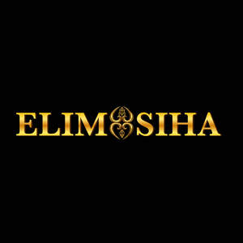

Trade Mark Journal No.2026/010 6 March 2026
UK00004340936 14 February 2026 (3,35)

- Class 3
- Skincare cosmetics; Anti-aging skincare preparations; Anti-aging moisturizers used as cosmetics; Skincare preparations; Moisturisers [cosmetics]; Skin moisturizers used as cosmetics; Anti-ageing moisturiser; Suncare lotions [for cosmetic use]; Cosmetic moisturisers; Moisturising skin lotions [cosmetic]; Beauty serums; Acne cleansers, cosmetic; Facial moisturisers [cosmetic]; Non-medicated skincare preparations; Skin cleansers [cosmetic]; Moisturising skin creams [cosmetic]; Beauty serums with anti-ageing properties; Facial creams [cosmetics]; Skin moisturisers; Skin care lotions [cosmetic]; Skin care cosmetics; Skin moisturiser; Skin balms [cosmetic]; Beauty care cosmetics; Moisturisers; Skin care creams [cosmetic]; Skin recovery creams [cosmetics]; Skin creams [cosmetic]; Facial cleansers [cosmetic]; Cosmetics; Cosmetic nourishing creams; Skin cleansers; Skin masks [cosmetics]; Moisturiser; Cleansing creams [cosmetic]; Skin moisturizer masks; Anti-ageing serum; Facial lotions [cosmetic]; Exfoliants for the care of the skin; Body and facial creams [cosmetics]; Non-medicated skin serums; Cosmetic creams and lotions; Exfoliants for the cleansing of the skin; Skin care oils [cosmetic]; Anti-aging serum for cosmetic use; Lotions for the skin; Skin fresheners [cosmetics]; Skin toners [cosmetic]; Sunscreens [for cosmetic use]; Skin cleansing lotion; Cosmetic massage creams; Body creams [cosmetics]; Sunscreen [for cosmetic use]; Facial creams [cosmetic]; Skin make-up; Exfoliating creams; Skin cleansers [non-medicated]; Aromatherapy creams; Cosmetics for use on the skin; Creams (Cosmetic -); Aromatherapy lotions; Organic cosmetics; Skin hydrators; Night creams [cosmetics]; Skin hydrators for cosmetic purposes; Facial gels [cosmetics]; Cleansing lotions; Anti-wrinkle creams; Facial cleansers; Cosmetic products in the form of aerosols for skin care; Exfoliant creams; Cosmetic preparations for skin firming; Moisturising gels [cosmetic]; Creams for the skin; Colour cosmetics for the skin; Moisturizing preparations for the skin; Hydrating creams for cosmetic use.
- Class 35
- Marketing research in the fields of cosmetics, perfumery and beauty products.
Onike Theodora Wright